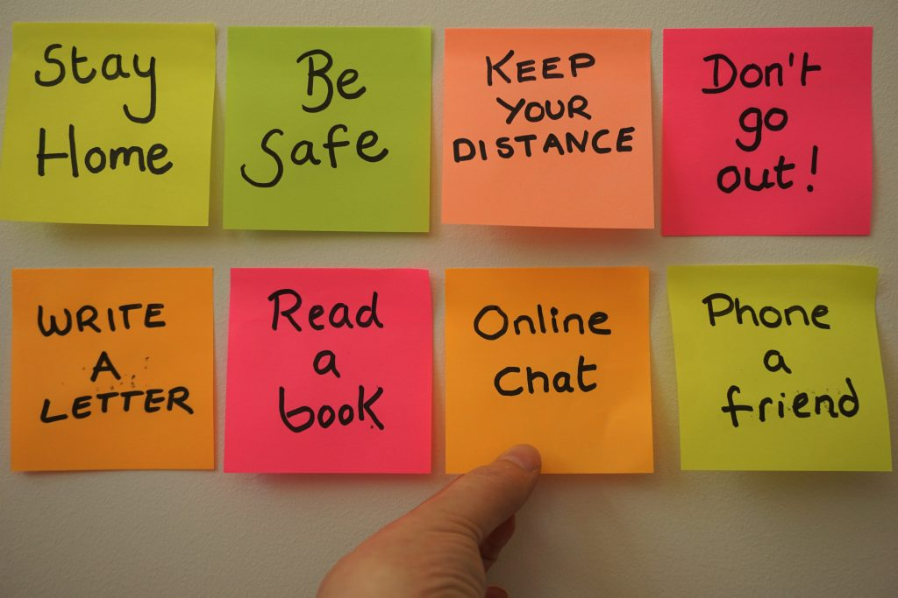

Activities

Recovery won’t happen overnight, but here are some daily exercises and tips to become more mindful of yourself and lead to overall improved mental health.
Ways to be more productive
- Make a to-do list
- Take Breaks
- Focus on one goal at a time
- Find your peak hours
- Be optimistic
- Research shows that happiness increases productivity while being in a bad mood leads to procrastination.
Instead of dwelling on the things you have to do, celebrate the progress you have made and look forward to only making more.
How to motivate yourself
- Get sunlight
- Reward yourself
Rewards provide a personal motivation to get tasks done.
If completing the task is not gratifying enough, you can set rewards for yourself. Give a friend $20 and if you finish the task by a set time, retrieve the money.
If the task is not completed, you lose the money.
- Start small
If large, strenuous tasks lead to you wanting to procrastinate more, start off with easy, little tasks that make you feel productive to get your day flowing to find motivation to execute more tasks.
- Surround yourself with people who motivate you
- Listen to music that uplifts you
- Music is a great way to counteract the low energy you may have.
Upbeat music that inspires you to be productive can change your mindset to be more motivated
- Be kinder to yourself
- Beating yourself up for having an off or lazy day will only lead to worsened moods therefore being less motivated. Instead of fixating on taking a step back, focus that energy on taking a step forward.
Be grateful for what you have. This may be as simple as being proud of yourself for getting up today or having the ability to provide for yourself.
How to seek help
If you are enduring persistent symptoms of any mental illness described in the learn page, it may be time to seek further help.
Many people go to their primary care physician for assistance.
Primary care physicians can conduct screenings to test for depression and refer you or connect you with counselors, therapists, psychologists, or psychiatrists.
Finding the right practice and provider may not be an easy process.
Many practices may not take your insurance or have no availability to take in any new patients given the circumstances of the pandemic.
It will be a search, but finding the right person for you will make it worth it!
There are different mental health practitioners who are trained to provide different treatments.
- A psychologist has a doctoral degree and is trained to evaluate a patient’s mental health through interviews, psychological evaluations,
and testing to diagnose and treat with therapy.
- Counselors and therapists are also trained to evaluate a patient’s mental health to diagnose and treat with therapy.
- Psychiatrists are licensed medical doctors who also have psychiatric training to diagnose mental health conditions.
These doctors are able to prescribe medications and monitor the effects while providing therapy.
- Primary care physicians are also able to prescribe medications, but this is not their specialty.
They can offer medication and referrals to other professionals who specialize in mental health.
If getting professional help is not attainable for you financially, there are free services available.
If you are a student, there are counseling services provided by the school.
Most colleges have trained staff to address issues and provide counseling at their health centers.
If you are not a student, there are centers and clinics that provide pro bono services.
If you are not ready to seek professional help, you can start by talking to helplines which are free.
Don’t be afraid or feel ashamed going to people you consider to be in your support system.
The people in your life will most likely want to help and be willing to listen or just simply provide you company.
Friends and family may also refer you to any of their connections and at the least provide you with their support.
Struggling to get out of bed? Try these exercises
There will be days that are worse than others. Some days it may feel impossible to get up and start your day. Here are some ways you can fight that.
- Be accountable to someone
- Make plans with a friend or family member. This could be as simple as a walk, run, or grabbing a coffee.
Having plans are good motivators knowing you are accountable to meet these agreements to get up and do something, anything!
- Visualize a successful moment
- Whether success to you is getting an A on a test, scoring a goal, getting a bonus at work, or putting a smile on someone else’s face, visualize this and imagine that positive feeling.
Channeling this feeling may motivate you to get out of bed and start working towards success.
- Brighten up your room
- When you wake up, open up your curtains for natural light and turn on any additional lighting.
Dark rooms are good for sleeping, but not for getting up.
- Make your bed
- Making your bed is a small easy task that provides you with instant gratification knowing you completed this task.
It tidies up your space and will prevent you from wanting to get back in bed when it is freshly made.
- Start thinking about food
- Think about what you want for breakfast to start your day off with getting the nutrients you need.
Cravings of food may be a good motivator to get you up.
- Don't be afraid to ask for help
- If you have reached a point where you are unable to motivate or help yourself, there is no shame in reaching out for help.
If you live with anyone, you could ask them to come wake you up or just sit with you.
Most people are open and willing to help, ask people in your life to be a motivator!
Self-love checklist
Self love starts with self care and it is not selfish to seek. Caring for those around you is considered to be an emotionally healthy thing and taking care of yourself is, too.
If you fail to check in on yourself, you will be left drained with nothing to give to others or yourself.
Here are some ways to care for yourself:
- Sleep at least seven hours a day
- Exercise! This increases endorphins which are hormones that relieve pain and stress and bring a euphoric feeling.
- Say “no” sometimes and be okay with it. Don’t feel pressured or obligated to do anything, it’s okay to focus on yourself.
- Treat yourself! Buy yourself a gift or go for a massage. The little things can go a long way in uplifting your mood.
- Let go of anything that does not serve you anymore. There is no need to put energy into things that don’t reciprocate it.
- Take a hot bath.
- Make a playlist of songs that leave you feeling good.
- Start your day with an energizing smoothie.
- Watch the sunset.
- Perform a random act of kindness
- Log off social media for the day.
- Wash your bedding.
- Make some art whether that’s coloring or starting a new project.
- Meditate!
Affirmations
Practice saying or writing down daily affirmations. These are any positive thoughts that use this mindset to empower yourself. Here are some examples:
- My body is healthy.
- I am in control of my life and how I choose to build its foundation.
- I have increased energy and happiness today.
- I do not define myself with my negative thoughts.
- I can forgive those who have hurt me.
- I can forgive myself for my mistakes.
- I have a great support system.
- I have qualities that will bring great success.
- I have the abilities to overcome all the challenges I face in life.
- Happiness is a choice and I am choosing to be happy today.
- I deserve to be happy.
- Today, I am deleting unhealthy habits and bringing positive changes.
- Although times are tough right now, they never last forever.
- Tomorrow is a new day.
- I am overcoming an illness and recovering each day.
- I can accept my emotions and allow them to serve their purpose.
- I am grateful for the people in my life who _______.
- I am at peace with who I am.
- I deserve love.
- I am loved.
- I am enough.
- I’m in the process of becoming the best version of myself.
Ways to Distract Yourself
It can be easy to get stuck in your own thoughts that only continue to spiral downward leaving you more down, distressed, and anxious.
In these times, it is important to be able to pull yourself out of these situations by redirecting your thoughts and here is how you can:
- Spend time with your pets and give them a snuggle. Unlike people, these animals don’t judge and are happy to see you no matter how you look or feel.
- Playing music is so beneficial and I can’t stress this enough. This always helps me take my mind off things and has the ability to completely change my mood.
Listening to music that makes me think of happier times helps me feel those positive emotions.
- Coloring is another activity that can take your mind away from negative thoughts. Focusing on coloring can be soothing and relaxes your brain.
- Watching your favorite show or starting a new series can fixate your thoughts elsewhere.
- Journaling is another effective tool to get your thoughts and emotions down on paper to reflect.
- Getting out of the house alone or with friends is a great distraction. Being out can stimulate other parts of your brain.
- Imagine leaving your painful feelings behind. Take all the negative emotions and picture yourself putting them in a box and walking away.
- Read a book. Dive deep into the story as if you are in the world of this book. Use the storyline as an escape from reality.
*DISCLAIMER: This site is intended to be an additive on your path to recovery.
It is not help from a professional source. In case of an emergency or crisis, call 9-1-1*